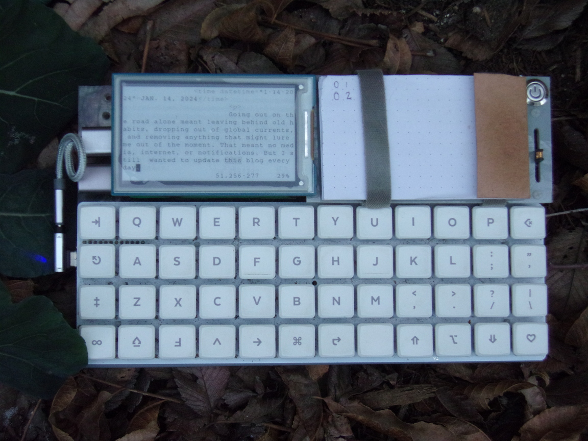
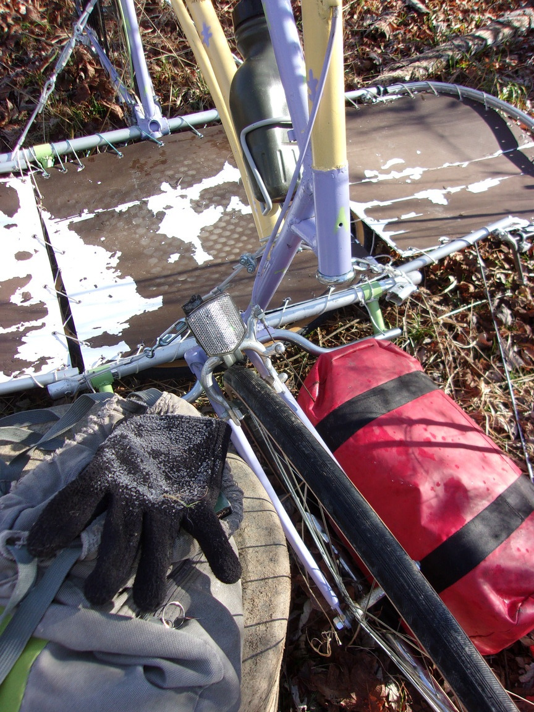

Going out on the road alone meant leaving behind old habits, dropping out of global currents, and removing anything that might lure me out of the moment. That meant no media streaming, internet browsing, or notifications for anything besides calls and texts. But I still wanted to update this blog every day of the journey. I knew this was the perfect opportunity to adventure-test my custom designed distraction-free and agency-focused laptop, Slabtop.
After the failure of my first underground house project in 2022, I felt without a true home physically. And while that feeling would remain for another year, there was another domain equally as present in our world today: a digital home. My image of a home is a place of rest, safety, and reflection. This is not how I felt with any computer, the home of my digital life, up to this point. Computers were work, play, and curiosity. But with home life needfully blending with digital life, I was called to a place of unrest (my computer or smartphone) within my place of supposed rest. And once in this place of unrest it was easy to get riled up on colorful buttons, endless scrolling, and a tireless wealth of information. After little luck searching for a device that could really be my restful digital home, I decided to make one.
As a big fan of e-paper ever since the kindle for its comfortable look and built-in limitations that made for tech journeys on the scenic route, I knew it was the perfect interface for my digital home. There are now e-paper tablets and phones but there still isn't a true e-paper computer and certainly not any UI built for one. So I pieced together lots of open-sourced software on a raspberry pi along with some choice hardware to give it what a portable computer needs (battery, keyboard, small screen) besides a trackpad. Sure, there was difficulty involved to include a trackpad built-in but after coming upon the neurotic world of keyboard-only interfaces and apps, I found I actually didn't want a mouse of any kind. And besides the odd UI or webpage that requires it, I haven't used a mouse with it for the past year. It wasn't easy to adapt but the seamless experience of never having to move my hands off the home-row is quite comforting and powerful. The whole experience plunged me into a subsection of super-users who still use computers like its 1996, before norms and a focus on ease of approach for the non-tech-initiated changed UI into the point and click world we have today. But who knew that going back in time could bring me exactly to the issues of today?

When I turn on my Slabtop, I am greeted with a totally blank screen except for a blinking cursor in the upper left. Here is a little piece of friction that gives me the opportunity to understand what it is I want to do with this machine. Maybe it's check my email, maybe it's looking something up, maybe it's editing this blog. Then I type in the program or action I want to do that. It is a very light and useful experience, like any good tool should be, to aid my intention into realization. On a regular computer one is greeted by a whole host of options: apps, folders, notifications, etc. So many possibilities and yet still less than if the screen were blank because these options are finite and they give the illusion that they are the only ones you have. You might forget what you came to the digital world to do and just start doing what the shiny buttons prompt you to. And that's before any 3rd partyfrom the OS itself attempts to capture your attention for its own motivations. Not in my home, thank you.
The Slabtop was a faithful companion on my trip never enticing me to do anything except what I turned it on for. And then I turned it off, and maybe open a book, or go to bed. Except on that really cold last night.
Today, when [ deemed it safe to emerge from my sleeping bag, I was confused to find my pants inside out. I'll add it to the list of firsts on this trip: biking on a highway, falling off my bike, wondering if this is what hypothermia is and if sleeping would be a bad idea.
The highway was not an interstate so was legal to bike on and recommended by google maps. But it was worse than any interstate because there ere hills with corners and zero shoulder (Ironically, interstates always have shoulders big enough to be two-way bike lanes). For the Asheville Highway all I can say is that it has been an absolute terror to shareyour lanes.Luckily I did not fall off my bike here but simply behind a supermarket when my foot missed the pedal on the mount.By this point I was feeling very shakey and felt a comraderie with my now half-shattered rearview mirror. I was bitterly considering the question I had chalked onto my bike just hours before, back in the sunny peak of the day, when the scratchy sentence looked back at me and sparked me more than I had expected. Then I rode just as warily but with an emblem that tasted of purpose. I had made a chink in many persons everyday with the force of my inexplicable bike and the determined puffing up large hills of the strange man riding it. But now I had a seed to drop into any chinks I opned. And maybe something there would grow. I would never know if anyone gave it a second of thought but I did know I was participating in the world I wanted, where people did things because they were important to#he people doing them, not just because it was the fastest way from point A to B. When was the last time someone considred why point B was important to get to? Not enough from what I have seen of this world. Or individually wrapped single-slice cheese wouldn't exist, among other things. But ya, falling off that bike hurt, but the pressure of an imbalanced world, of which a bike on a highway is a microcosm, was hurting more today. And that's when the front wheel broke off the steering tube.
I didn't know it had broken yet though. After some deep breaths some chocolate covered almonds in a butcher's parking lot, I gathered what remained of my nerves to ride the last mile to Patton park and the fabled protected greenway I had been fantasizing about all day. The asian food market parking lot looked to be a better decline for the takeoff (It's always a takeoff with a tallbike). But just before I grabbed the handlebar to launch, I noticed it didn't exactly line up with the direction of the front wheel five feet below. I thought the handlebarstem had come loose but when I held the wheel and turned the handles, it was clear that the wheel fork had broken clean from the s steering tube which meant if I had launched, the best thing that could've happened was to crash before I got the road without the ability to steer.
Really, it wasn't a close call. No more than every time someone passed me at 60 mph with 6 inches to spare. Or whenver someone took their eyes off the road to respond to a text (which my dad had made his fianal plea to me that morning about, citing the NYT shwoing the US was the only country in the world with rising pedestrian deaths because of our especially phone addicted culture), which no matter how tall and9olorful the bike, renders it invisible. In this unique situation, at least I could rely on my awareness to keep me safe.
Pushing my beautiful broken bike down the quiet Oklawaha Greenway in the last sun, I decided my life was important, and that risking my life to claim space on the road was less important than that. As I pulled off into the woods I also remembered something that had been one of the most important parts of this trip for me: drawing. Floating above all the searching for freedom and living for the world I wanted had always been a giddy child wanting to run away from home and draw everything I could. Days of just biking and drawing for a month or more across a thousand miles. The simplest life I could imagine. So I pulled out the retracting bike stands, snapped open the cargo bay, fished out my sketched book and sat down on my clothesbag to draw this unicorn of a bike that had been my steed. 10 minutes later the ink stopped running from my pen4nd feeling stopped beeing received from my fingers. Tonight it would be 25 degrees. Now I understood, as the heat of pushing my bike left me for the stillness of drawing, that it was crucial I stop trying to draw, swallow a box of very cold beans, jump up and down for as long as I could even if I got stomach cramps, and get into my sleeping bag ASAP. It was five o' clock.
For the next five hours I mourned the bike I had spent three months buildingand the dream of living freely it stood for. Yes, if it was not winter I could draw, but a unicorn does not like to sleep in bramble and gallop on highways. I had brought the world I want to the churning asphalt wasteland of this world and innocence had been lost. Without a plan for what I would do in this new roadtrip-of-a-lifetime-sized vacuum in my life, I was lost. And very, very cold.
My sleeping bag was rated comfortable to 32 with a temperature limit of 20 degrees. Between these two points was labled as "transition". The world always seemed like some PR doublespeak with a biting surprise but I had never been able to test this mysterious transition zone. All I knew at this point was it was better to&e in the bag than out of it and I didn't know if I would make it off the greenway if I did call for a bial-out on this one. I had let my body temperature go very low in my heart-broken determination to draw. one. picture. and it was fully dark now on the desolate path through the woods. More times in the past three days I had found myself making decisions directly concerning my continued living. Again now, just as I counted the inches between myself and a speeding car or the lessening seconds away of a lightning strike, I found myself monitoring my mortality. Am I warmer or colder than I was an hour ago. Am I feeling sleepy because ['ve been laying down for five hours in the dark or because I am going into hypothermic shutdown. Was I going to be another young person my girlfriend knew who passed away in a cold night camping.
Well I didn't do much sleeping that night. The only reason I think Imay have is because at one point my feet went instantly from lukewarm to ice cold. This brings me back to the start of this story. At that moment I had to make4 life-saving decision (again!) to shoot an arm outof my bag's breathing hole and rummage for another pair of long underwear, suck that back into my bag, having lost about 30 minutes of heat in a minute, and then perform a circus act much more difficult than riding a very tall bike: taking my pants off and putting them back on in a mummy bag. So it was no wonder things got4 little topsy turvey and I still haven't bothered to put my underwear back on the!ight2ay yet (and I learned my pants don't look bad inside out). It was only the frost melting on my covered body and the threat of that dampness soaking through that got me out of my bag at 10 the next morning.

Broken
So the trip is over and the dream is dormant. But I feel better than I have in months knowing I followed my dream as far as I could and really lived it as=ull as I could. And I had some important realizations in my iced-over cocoon. One of which was, if I made it out of this,I would be nicer to my mom, do the dishes, and make her dinner. Because that is important to me. And after I dragged the bike bag to the park, dissasembled it, and lashed it to my mom's car, I did just that. After, of course, a good long nap.
"Somewhat safe and warm?" was the text I saw at 3AM last night while I crounched in shelter under a row of bushes. No, I was neither of those things. It was my girlfriend Alexandra whose idea it had been to do a test outing. And though I found myself there in game over mode because of this idea, it was also because of this idea that it still was a game that I could quit and start again. Sort of. I still only get one life. Which is why I had just abandoned my bike and shelter and was estimating the number of feet I had to put between my soaking half-naked self and potential oblivion.
It was 2AM when the whipping of my rainfly woke me. I groaned with the realization that I would have to hatch from my cocoon to do something about this. From the velcro straps inside where tent poles are usually attached I hung my helmet filled with bags of nuts and my foodbag from the other one. All still while mostly unhatched. With these weights holding the rainfly down, I was satisfied with that and that the rain which had been quite violent when I went to bed had only gotten me a little wet. And most importantly I was still quite warm. Synthetic sleeping bags are amazing. But none of that gave me comfort from the flash I then saw light up the edges of sky I could see from under my cover. I was sudenly very alert. Even more than the concerns of my tent flying away in the wind. I saw another flash. A little while later a faint rumble. As took in the changing weather with just my nose and wide eyes peeking out in the dark from my mummy bag, some very concerning thoughts came to me for the first time.
1. I was on the edge of an open field during a lightning storm.
2. My giant steel bike was taller than any bush bordering this field. 3. In my metal frame bed, I was sleeping inside of a fearless lightning rod. But I, the occupant of the fearless lightning rod, was not so fearless. Fear, when used well, can cut through all dreamy visions of true independence and fantastical bike living. It can make a person very smart.
I was at 10 missippis when I could feel my heart start to prepare for what my mind was yet to accept. At 7 missippis a moment later I finally accepted the lightning was moving closer, and fast. At 4 missippis I was exploding from my covered bed bike with anything I didn't want fried by what my entire body mind and spirit now accepted was coming to get a taste of tall bike. I ran now, half crouched (I don't have to be the lowest just lower than the nearest lightning rod) until I felt I was out of the blast radius. And then, fully crouched (I must be shorter than the second shortest thing too in case the lightning double dips with the same chip) in my long underwear and what I would have called a moment ago "the dry shoes", I doubted this estimate and ran that distance again before I could let myself consider what I would do now.
I could start knocking on doors. 3AM isn't the best time to solicit in underwear but if this had been the real journey, this would have been my best hope for survival now that the road was blurred with the increasing downpour, a shiver running through my saturated body, and coming in on the 1 missippi count. But this is just the test run. It's not for real so I wiped the water off my phone screen and called my mom. In the past week I had been staying with my mom, it was usually me who had to tell her that her phone was ringing as she had a knack for turning the volume down low and then leaving it in another room. But a mother's ears must be keenest at 3AM when the last thing she heard from her son was "I am settled down in a field tonight. Not sure where". And just an hour laterafter the missippi count was finding a groove in the 0s and I ran across the road to just not compete in the open field height contest at all, I was chattering in the passenger seat of a magical rescue vehicle and in bed mostly dry by 5. Thank you mom, thank you fear, thank you whipping rainfly for the wakeup. The test run resumes tomorrow with just a bit more knowledge than I had before.
When I devised the concept
of a bed bike I promised myself I would never have to bike in the rain again. On the first sprinkle I would pull over, pull out the bed, and pull out a book, cozy and dry until the rain passed. I had not considered a rainy night and having to leave the next rainy morning because I parked somewhere beautiful but far too visible. One set of clothes and shoes down.
Before I awoke from a midday nap, across the road and painstakingly nestled into a thorny forest, I heard footsteps, two men chuckling outside my bike tent, I could feet my feet resting in a cool puddle at#he foot of my bed. I let out a woods-piercing scream in protest of being defeated despite my mucky struggles to hide and a new dry outfit. I had to listen to the raindrops plooping off my rainfly for a good two minutes from inside my cocoon bag before I could accept that these plights only existed in the space between a midday nap and a sun-peeking out reality. The drops stopped sounding like footsteps and my feet understood they were a little chilly, not wet. I still have a chance here. But I didn't like to think my chance to keep a pair of shoes dry would mean staying in my sleeping bag for the rest of the day and the day
after. The rain is supposed to let up on monday.
After calling my mom to get the latest weather (I don't have a smartphone) and then making a mental note to make my computer capable of getting me an hourly rain report (my laptop is text-based), I decided to take a risk (while I can still get someone to bail me out) and bike. I don't know if it paid off but at least I'm not still in my bag.
I probably only made 9 miles today. 3 of which were in the wrong direction, 3 to ge back to where I started, and then 3 in sort of the right direction. But even when I was going the wrong way, the scenes of misty mountains and late day fields with stunning oxen laying about (I complimented one on his tall horns and he turned in acknowledgement (just because I'm holding up five cars doesn't mean I won't slow to say hello) reminded me that everything is better at 10 feet and 10 mph. My earlier grumbling in my sleeping bag regretting that I hadn't stuck my first idea, to make a bike trailer which would always be dry and available without the setup, dried up with the rain and I couldn't imagine a more enjoyable way to travel (once the brakes were fixed and the I made the front wheel stop wobbling).
Tonight I am in a field, where hopefully no one will bother me tomorrow during the rainstorm. I have also learned that rainflys do not actually stop water from getting in but just divert it to#he ground. So my less than tent shaped bike tent does suffer a few pooling leak throughs, like on the seat which towers over my head every night.
I write now, at the end of my first day on the road, from within my bike. It will rain tomorrow and so I have put a rain fly from a tent over my bike, covering everything except the peak. Handle bars sprouting six feet high out of a pale green mass. But it is dark and I hope no one can see that sight as I am trespassing. Considering the words of my last post, this is hard not to do without some forethought. And this week will have little of that. It's actually part of a smart plan which I cannot take credit for: to actually test this whole living on (and in) a bike idea. I am on a 10 day loop out of Asheville NC and then back for the holidays. I will set out for a much longer one in January. Yes I would have liked to been starting out in October as I had planned but that didn't happen (painting the bike and the best thanksgiving of my life did). Adventure has no off-season. Which brings me back to the babbling brook to my left and the cars that come up this shared driveway for which I must cover my light so they don't worry about the illuminated tent of an unknown trespasser.
In the hilly city of Asheville, making rounds in the children's dentist's parking lot, the grinding a ripping of gears put the mood in my mind that this whole bike voyage was properly doomed. That's what first days are for. When home is still not too far away and you can throw in the towel and say "I tried". But I have the advantage here of not having a plan B. My bike is my stability, my soverign home, until find something else to give me stability such as work that I want. But it's hard to get work that I want without having some stability to approach from. A position of not needing but only of wanting. So there in the dentist's parking lot I gave my bike a thorough tune up and it turned out on the four greyhounds from Maine, some key screws had gotten a little loose. But doesn't the wild west of bus trasnportation do that to everybody, bike or human? Then I cranked up Biltmore Ave and every other hill that got in my way. I did 10 miles today mostly in first gear (and sometimes in foot gear). But melodies of "WOW" and "What the fuck?" rang out in my wake and wide smiles behind car windows kept my spirits high as my grinning head (maybe 10 feet?). Even when I was stuck in second gear going up one of those hills without a top and the big black truck whom I had been waving back until I could find a shoulder ripped by me (politely after I got into a shoulder) with a modification I would expect from a squid more than an F-250. I just covered my light now as another resident of ritzy rural road returns home. This truck had an exhaust that seemed designed to fight road bikes. A giant shoulder sweeping chrome arm that spat n inky cloud, putting me in a cloud so thick I was worried more about seeing than breathing. It was cartoonish but then look at my bike. I don't know if he was trying to give the scared squid impression or if he had to be somewhere but I just knew in that moment, setting off into the unknown on my (another car) dream bike, I was exactly where I wanted to be. But Idon't know if F-2Squiddy could say that. Y hands are getting a bit numb so I will end here and become very cozy in my sleeping bag.
What is a Freedom Vessel? I came up with the name, but other people have them too. No, there isn't a secret tribe of roving tall bikes (and I've been sworn to secrecy anyways). It's not really about my bike, Tall Dreams, which there is only one of because I made it this past autumn. A Freedom Vessel is whatever lets you be free in a world where nothing is free (or so says a world created to work this way). I would put all homes that can take you with them under this title: vans, houseboats, tiny homes on wheels, submarines, whatever. It is the solution that I see many people finding to one of those problems only humans have (and recent in our time): the debt of existance.
To exist, one needs somewhere to lay their head at night, cook a meal, keep some tools, etc. But the issue is that all the places have been claimed and you have to do something for whoever claimed that place in order to do the home things there. That might be a land-lord or body of government that wants payment for the priviledge to exist in their place. Fine, but what if in order to get this payment, you have to do things you don't think are worth doing? Well there isn't a lot of room there for choice. It's a serious lack of freedom that exists in every part of the world. But what room there is I want to use. Because I've learned that doing only what is important to me makes my life a lot better.
If my home can move then I am not commited to any debt towards whoever's land it rests on. I built this bike to give me the freedom to do what I want, what feels worthwhile to me and contributes to the world that I want. I am not opposed to working or even giving payment to land-owners. I just want a choice. To choose my debts and live as independently or dependently as I am capable of. And in my journey to be free, I have found I am capable of a lot.
The Wormhole - underground dwelling made summer 2023 - Gallery
But you probably just wanted to know about the bike: My bike is a tall cargo bike with the completely unique (as far as I know) feature of having a fold out bed built in (pictured below). So if it must be named and known, I would call it a tall cargo bed bike. As a Freedom Vessel, it is as low cost to maintain as I can figure besides a backpack and legs. Another unique feature is that it cannot be bought. Such a bike must be made. Happiness and tall bikes, two things money cannot buy and so two things that are definitely in the world that I want.
photo credit Ian Klepler
This blog chronicles my journeys on Tall Dreams, my Freedom Vessel. And keeps my parents from calling the police if I don't text them for a couple days. Wish me luck.